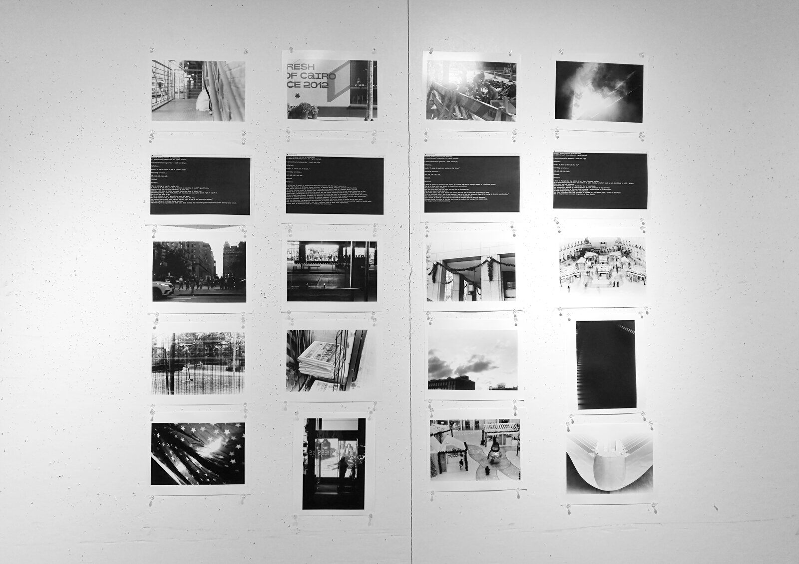

Seed: HUMAN
Statement
Seed: HUMAN is a generative photography piece that explores the role
Artificial intelligence plays
in co-creating artworks with the human.
To tell a visual story in a world infiltrated by intelligent machines,
how much agency do we actually have as a human?
Are we the photographer, or simply a walking camera?
Who is the artist? AI or us?
How credible is the storyteller in this sense?
This project consists of a series of images in groups of four.
Two machine learning models are used:
one for interpreting the content of the first image in one sentence,
the other for generating a narrative based on that sentence.
A human then attempts to visualize the whole narrative by taking
three subsequent photographs according to the keywords from the generated narrative.

Generated Narratives
Story 1
A dog is sitting on top of a window sill.
It stares up at the stars, or, for an instant, at something it couldn't possibly see,
especially with the corkscrew-shaped top. It feels blue.
Suddenly, a big group of people surrounds the dog and drags it into a cage.
Not before grabbing a water bowl, taking off its shoes, and placing the kennel right on top
of it.
What is the dog going to do?
It can do nothing. It isn't going to run away. Not again. What will happen is that he will
fall flat on his face. And then, some sadistic person will stuff him back into his cage, on
top of the "observation window," still staring up at the stars, losing his mind, and
wondering why a dog would ever think twice about visiting the freestanding observation
window of the Kennedy Space Center.
Story 2
A person next to a wall.
A notched scrap metal fence painted with the mayor's name on it. A beer cap. Crayons of
different shapes and sizes. In downtown Murray, Virginia, a banner offering little more than
a slogan of "If you want to make her vote, go to the polls" hangs on a lamppost near a bus
stop.
The recent election result in Virginia's 4th Congressional District was a surprise to many
because turnout was so low, at only about 34 percent of the district's voters. But some
recent reporting found the city — an affluent city of about 91,000 — may be producing a
social media savvy voter unlike any other in the country.
In cities around the country, there are tight races between incumbent city officials and
challengers that hinge largely on social media interactions.
Instead of printing thousands of handouts in campaign languages or canvassing door to door,
Murray's candidates have relied on a well-staffed Facebook page and Twitter account to
spread word of their plans. They have taken cues from progressive organizations in Virginia
where elections have been successfully fought via social media. They have launched
personalized ads — one for a candidate could be about voter registration, another
about an assault on clean air — and held press conferences.
Story 3
A group of people are working on the street.
It's autumn and they're making a hammock as a
Christmas present. They go to sleep and a year passes. No hammock ever materializes. The
scene seems cruel, somehow.
Only then they notice that the skies are very blue on Christmas day. They go back home to
talk about it. A few months later, they visit friends who mention the blue sky and have some
fun breaking it down. "It's our spiritual color," one of them explains, "and one of the most
prominent signs of the coming of Christ's second coming."
This little exchange reminded me of a few real-life events happening now, and I thought it
would be a good idea to write down my thoughts about the blue sky phenomena. Although
usually the notion of the blue sky is used to celebrate the coming of the Christ child, I've
always found it oddly fascinating.
Story 4
A plane is flying in the sky.
Behind it is a star, rising and setting. If you were floating alone in space you could see
it quite clearly, but others would be much less likely to catch a glimpse. Where, then, are
your neighbors?
You swim through a swimming pool that is the size of a continent. Your movements are
measured by people on machines that can accelerate in any direction. This pool is
illuminated by the sun, which is beaming a yellowish beam in all directions. The whole pool
is glowing purple, your own reflection.
Your limbs follow your head. They are curled or extended in a wild manner, like a cluster of
houseflies. That is how your brain interprets the gestures of these insects.